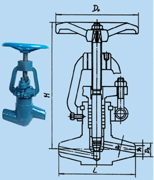

您只需一个电话，我们将提供合适的产品，竭诚为新老客户提供优质的服务！
产品分类
电站阀
网站当前位置：网站首页 > 产品中心- 电站阀门

- 电站阀门
电站阀门又称焊接式截止阀,安装时阀门直接焊接于工艺管道中。焊接方式有承插焊和对焊两种，阀门的结构型式有三种:一种是分体式，结构简单,适用于一般场合;另一种是片形散热装置式，适用于高温高压介质;再一种是整体支架式,适用于温度和压力特别高的工况,另外主体材料按不同工艺要求分别采用碳钢，耐高温合金和不锈钢，密封副堆焊硬质合金。因此，可适应电站行业中各种状态的特殊需要。J61Y-P57 140 V、P
J61Y-P54 170 V、P型高温高压截止阀
J61Y-P320 C、V、P用途：
高温、高压截止阀的阀体和填料箱采用牢固的整体结构，适用于电站或其它行业介质的温度和压力特别高的管路中作启闭装置。
主要技术参数：主要零件材料： 主要外形尺寸: -
上一张：气动管路截止阀
下一张：承插焊截止阀 J60W-25.64.100C.P型